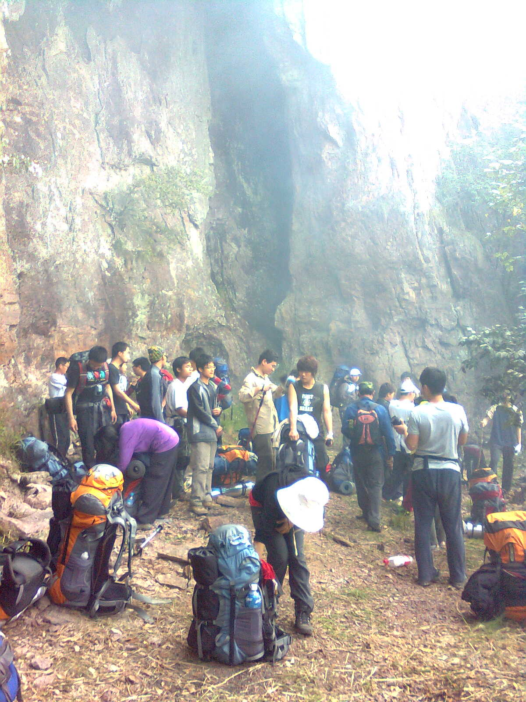

发信人: kitehuang (kitehuang), 信区: outdoor
标 题: 巨龙顶晒图
发信站: 饮水思源 (2010年05月02日15:28:06 星期天)
由于只带手机没带相机，于是各种渣画质~诸位请不要仔细研究，看个大概就行
忍不住照片就放了很多……对不起网速比较慢的同志~
我尽量不放单人照~其他n多照片后面我会放到ftp上去的
以上~
出发！
screen.width - 200){this.width = screen.width - 200}">
乱石路始焉
screen.width - 200){this.width = screen.width - 200}">
多有派头的财哥
screen.width - 200){this.width = screen.width - 200}">
向导大叔是好人啊~后来帮我们接了很多水
screen.width - 200){this.width = screen.width - 200}">
活蹦乱跳的小皓皓~可怜被训了
screen.width - 200){this.width = screen.width - 200}">
icer课堂
screen.width - 200){this.width = screen.width - 200}">
各种上山风景
screen.width - 200){this.width = screen.width - 200}">
screen.width - 200){this.width = screen.width - 200}">
screen.width - 200){this.width = screen.width - 200}">
screen.width - 200){this.width = screen.width - 200}">
screen.width - 200){this.width = screen.width - 200}">
screen.width - 200){this.width = screen.width - 200}">
看到硕大岩壁，心想要是从岩壁下绕的话岂不是要走很久
screen.width - 200){this.width = screen.width - 200}">
果然是要从岩壁下走过
screen.width - 200){this.width = screen.width - 200}">
各种睡姿
screen.width - 200){this.width = screen.width - 200}">
终于来到山脊
screen.width - 200){this.width = screen.width - 200}">
总的来看这是最危险的地方，照片似乎拍不出感觉
screen.width - 200){this.width = screen.width - 200}">
终于来到营地，原来是一块崖壁之下
screen.width - 200){this.width = screen.width - 200}">
意义不明的一块碑

到了水源，看到如此可怜的状况，终于掩抑不住失望之情……尽管如此大家还是竭尽所能
地接水……
screen.width - 200){this.width = screen.width - 200}">
聪明的同学们发明了引流取水法
screen.width - 200){this.width = screen.width - 200}">
向导生好了篝火
screen.width - 200){this.width = screen.width - 200}">
第二天早上烟雾缭绕
screen.width - 200){this.width = screen.width - 200}">
待拍照
 screen.width - 200){this.width = screen.width - 200}">
下山沿途风景
screen.width - 200){this.width = screen.width - 200}">
唯一可以风风光光留念的位置
screen.width - 200){this.width = screen.width - 200}">
被烧过的山，所有的树都半死不活……
screen.width - 200){this.width = screen.width - 200}">
下山风景~终于到了好走点的地方
screen.width - 200){this.width = screen.width - 200}">
终于来到了 可以迅速接满一瓶水 的水源啊！
screen.width - 200){this.width = screen.width - 200}">
终于看到村庄和竹海
screen.width - 200){this.width = screen.width - 200}">
小小失足~嗯还是不厚道地放上来了
screen.width - 200){this.width = screen.width - 200}">
各种滑滑梯
screen.width - 200){this.width = screen.width - 200}">
终于走回石头路
screen.width - 200){this.width = screen.width - 200}">
此时才意识到向导家是个像模像样的农家乐
screen.width - 200){this.width = screen.width - 200}">
肴核既尽，杯盘狼藉
screen.width - 200){this.width = screen.width - 200}">
向导家大院里鱼缸旁边的石板……
screen.width - 200){this.width = screen.width - 200}">
整理中
screen.width - 200){this.width = screen.width - 200}">
screen.width - 200){this.width = screen.width - 200}">
岸上围观众
screen.width - 200){this.width = screen.width - 200}">
打水漂
screen.width - 200){this.width = screen.width - 200}">
再见了游人遍布的小乡村
screen.width - 200){this.width = screen.width - 200}">
哪知没走几步路，堵车ing
screen.width - 200){this.width = screen.width - 200}">
小皓皓的忧郁
screen.width - 200){this.width = screen.width - 200}">
乱入~摩托车改装小卡车
screen.width - 200){this.width = screen.width - 200}">
终于抵达，已经是十一点半了诶
screen.width - 200){this.width = screen.width - 200}">
--
※ 来源:·饮水思源 bbs.sjtu.edu.cn·[FROM: 59.78.0.55]
※ 修改内容:·kitehuang 于 05月02日15:33:35 修改本文·[FROM: 59.78.0.55]
※ 修改内容:·kitehuang 于 05月02日16:21:56 修改本文·[FROM: 59.78.0.55]
|